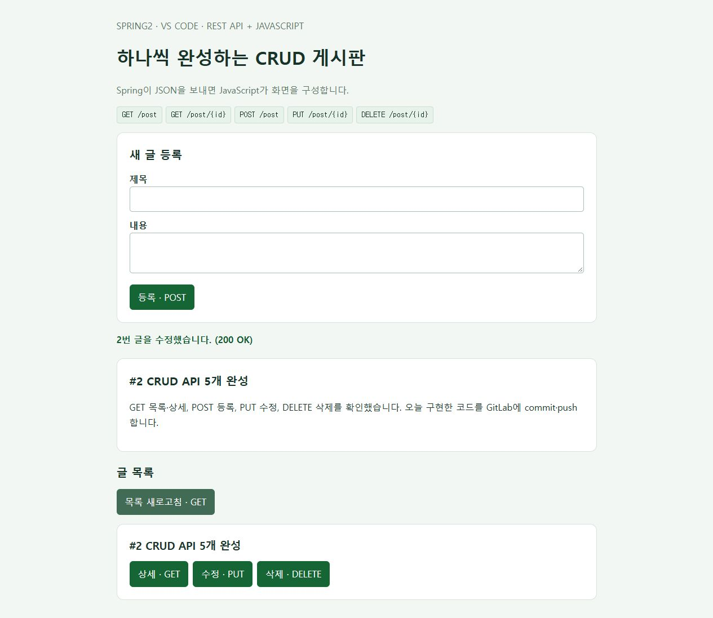
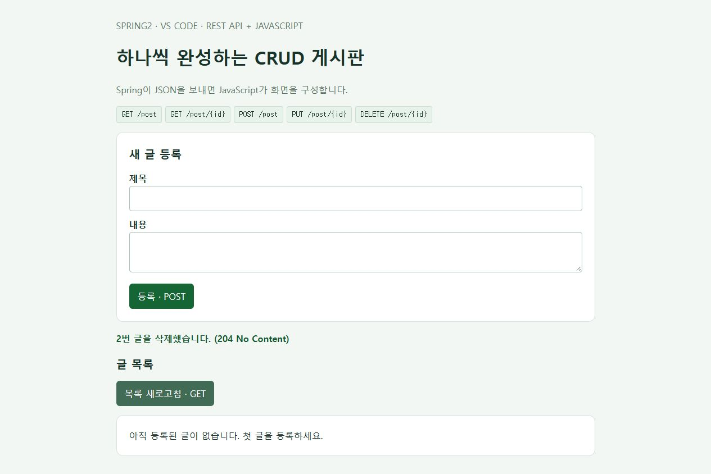

01. 이번 과제의 요구조건
Spring Initializr에서 프로젝트를 내려받고, GitLab에 처음 올린 뒤, CRUD API를 하나씩 구현하면서 그날 작업을 commit·push합니다. 개발 도구는 VS Code이고, 서버는 JSON 데이터를 주고받는 Spring REST API로 만듭니다.
| 순서 | 정확한 요청 주소 | 할 일 | 성공 응답 |
|---|---|---|---|
| 1 | GET /post |
게시글 목록 조회 | 200 OK, JSON 배열 |
| 2 | GET /post/{id} |
게시글 한 개 조회 | 200 OK, JSON 객체 |
| 3 | POST /post |
게시글 등록 | 201 Created, JSON 객체 + Location |
| 4 | PUT /post/{id} |
기존 글의 제목·내용 수정 | 200 OK, 수정된 JSON 객체 |
| 5 | DELETE /post/{id} |
게시글 삭제 | 204 No Content, 응답 본문 없음 |
{id}는 실제 글 번호로 바꿉니다. 예: /post/1. 이번 과제의 경로는 단수형 /post입니다. 이전 가이드의 /api/posts를 사용하지 않습니다. 상태 코드, 글의 필드와 검증 규칙은 아래 실습에서 정한 구현 기준이며, 추가 과제 지침이 있으면 그 지침에 맞춥니다.
| 구분 | 사용하는 곳 |
|---|---|
| 개발 | 내 PC의 VS Code · JDK 21 · Maven Wrapper |
| 소스 제출·작업 이력 | 본인의 GitLab 저장소 |
| API 실행 | 로컬 Spring Boot, 기본 http://localhost:8080 |
| 이 설명서 | 기존 블로그의 spring2 폴더 |
GitLab에 push하면 코드와 커밋이 저장됩니다. push 자체가 Spring 서버를 실행하거나 배포하는 것은 아닙니다. 이 블로그는 가이드를 제공하며, 실제 과제 코드는 GitLab에서 관리합니다.
완성된 CRUD 예제 ZIP 다운로드 · 전체 Java 소스, JavaScript 화면, api.http, 테스트와 실행 설명이 들어 있습니다. 과제는 Initializr로 시작하고, 이 ZIP은 단계별 코드와 결과를 비교할 때 활용하세요. GitLab에는 실제로 작업한 내용을 기록합니다.
이전 버전에서 이어서 한다면
PostController의 기본 경로와 프런트엔드 호출 주소를 /post로 바꾸고, 아래 PUT·DELETE를 추가합니다. 제공하는 완성 파일로 교체할 수도 있습니다. Thymeleaf 방식으로 시작했다면 해당 의존성, 이전 HomeController.java, templates/index.html을 제거하고 선택 실습의 static/ 화면을 사용합니다.
02. Spring Initializr에서 ZIP 받기
기본값 선택
Spring Initializr 열기 → 왼쪽 항목을 아래 표와 같이 선택합니다. 화면의 초록색 표시가 선택된 값입니다.
| 항목 | 선택 / 입력값 | 선택 이유 |
|---|---|---|
| Project | Maven | pom.xml에서 의존성을 확인하고 Wrapper로 실행합니다. |
| Language | Java | 이번 게시판 예제의 개발 언어입니다. |
| Spring Boot | 4.1.2 | 캡처 시점에 제공되는 정식 버전입니다. |
| Group | com.example |
연습용 패키지의 상위 이름입니다. |
| Artifact | board |
프로젝트와 내려받는 ZIP의 이름입니다. |
| Package name | com.example.board |
자바 소스의 기본 패키지입니다. Artifact 입력 후 확인합니다. |
| Packaging | Jar | 내장 서버를 포함해 단독으로 실행합니다. |
| Configuration | Properties | 이 글의 application.properties 예제와 맞춥니다. |
| Java | 21 | 프로젝트에서 사용할 Java 버전입니다. VS Code의 프로젝트 JDK도 맞춥니다. |

SNAPSHOT은 개발 중인 빌드이고 RC는 정식 출시 전 후보 버전입니다. 처음 따라 할 때는 숫자만 표시된 정식 버전을 선택합니다. 버전 목록은 바뀔 수 있으므로 나중에 4.1.2가 보이지 않으면 제공되는 정식 버전과 Java 호환성을 다시 확인하세요. 공식 시스템 요구사항
의존성 5개 추가
오른쪽 ADD … 버튼을 누르고 이름을 검색한 다음 결과를 클릭합니다. 이 과정을 아래 5개 항목에 반복합니다. Windows에서는 Ctrl + B로 검색창을 열 수 있습니다.

| 검색어 / 선택할 이름 | 게시판에서 맡는 역할 | 이번 구성 |
|---|---|---|
| Spring Web | 요청을 컨트롤러로 받고 내장 Tomcat 서버를 실행합니다. | 필수 |
| Spring Data JPA | 게시글 객체를 데이터베이스에 저장하고 조회합니다. | 필수 |
| H2 Database | 별도 설치 없이 로컬 실습용 DB를 사용합니다. | 필수 |
| Validation | 제목 필수 입력, 글 길이 같은 입력값을 검증할 때 사용합니다. | 추가 |
| Spring Boot DevTools | 개발 중 변경 사항을 반영할 때 재시작을 도와줍니다. | 개발 편의 |
Spring Web은 Spring Reactive Web과 다른 항목입니다. 이번 REST API도 Spring MVC 기반의 Spring Web을 사용합니다. Thymeleaf는 추가하지 않습니다. Lombok은 이 예제에 필요하지 않습니다. 로그인·권한 기능을 구현할 때는 Spring Security를 별도 단계에서 설정합니다.
ZIP 다운로드
- EXPLORE를 누르면 생성될 프로젝트 파일을 미리 볼 수 있습니다.
pom.xml에서 Spring Boot 버전4.1.2와<java.version>21</java.version>을 확인합니다.- CLOSE로 돌아온 뒤 GENERATE를 누릅니다. 미리보기 하단의 DOWNLOAD로도 ZIP을 받을 수 있습니다.
- 내려받은
board.zip을 압축 해제합니다.pom.xml이 들어 있는 폴더가 프로젝트 루트입니다.

Spring Boot 4.1.2에서 이번 설정으로 생성되는 주요 의존성은 다음과 같습니다. Initializr가 만든 pom.xml을 그대로 사용하면 됩니다.
spring-boot-starter-webmvc
spring-boot-starter-data-jpa
spring-boot-starter-validation
spring-boot-devtools
com.h2database:h2
spring-boot-h2console
spring-boot-h2console은 이 버전에서 H2 Database를 선택할 때 함께 생성됩니다. 테스트용 의존성도 추가되므로 pom.xml의 dependency 개수가 화면에서 고른 5개보다 많아도 정상입니다. 0.0.1-SNAPSHOT은 내 게시판 프로젝트 버전으로, 위에서 피한 Spring Boot의 SNAPSHOT 버전과 구분합니다.
03. VS Code에서 프로젝트 열기
① Java·Spring 확장 설치
VS Code를 실행하고 왼쪽 Extensions(확장) 아이콘 또는 Windows의 Ctrl + Shift + X를 눌러 다음 두 확장 묶음을 검색해 설치합니다.
| 확장 이름 | 용도 |
|---|---|
| Extension Pack for Java | Java 코드 자동 완성, Maven 프로젝트 인식, 실행·디버깅·테스트 도구를 제공합니다. |
| Spring Boot Extension Pack | Spring 설정 지원과 Spring Boot Dashboard를 제공합니다. |
VS Code 공식 Spring Boot 가이드에서 두 확장 묶음을 확인할 수 있습니다. 이 글에서는 앞서 Spring Initializr 웹사이트에서 받은 ZIP을 사용합니다.
② 압축 해제한 board 폴더 열기
- File → Open Folder…(파일 → 폴더 열기)에서
pom.xml이 들어 있는 폴더를 선택합니다. - 왼쪽 Explorer(탐색기)에
pom.xml,mvnw.cmd,src가 함께 보이는지 확인합니다.src만 열면 프로젝트 루트로 다시 엽니다. - Java 확장이 Maven 프로젝트를 가져오고 의존성을 내려받을 때까지 기다립니다. Java Projects 뷰에서 프로젝트를 확인할 수 있습니다.
src/main/java/com/example/board/BoardApplication.java를 열어main메서드를 확인합니다.
③ 프로젝트 JDK와 터미널 Java 확인
Ctrl + Shift + P로 명령 팔레트를 열고 Java: Configure Java Runtime을 실행합니다.- 프로젝트의 Java 런타임 정보를 확인하고 JDK 21 설치 경로를 등록합니다. JDK가 없다면 Java: Install New JDK에서 21을 선택해 설치할 수 있습니다.
- Maven 프로젝트의 Java 버전은
pom.xml의<java.version>21</java.version>로 유지합니다. 런타임 설정의 기본값만 바꿔서는 Maven의 빌드 버전이 바뀌지 않습니다. - Terminal → New Terminal(터미널 → 새 터미널)에서 PowerShell을 열고 아래 명령을 실행합니다.
java -version
javac -version
.\mvnw.cmd -v
세 출력에서 Java 21 사용 여부를 확인합니다. mvnw.cmd -v는 실제 Maven이 사용하는 Java 경로도 보여 줍니다. 다른 버전이 나온다면 Windows의 JAVA_HOME을 설치한 JDK 21 폴더로, Path의 Java 경로를 해당 JDK의 bin으로 맞춘 뒤 VS Code를 완전히 종료하고 다시 열어 확인합니다. 확장의 Java 런타임 선택과 터미널의 JAVA_HOME은 따로 확인해야 합니다.
VS Code의 Java 상태가 Lightweight이면 상태 표시줄에서 Standard 모드로 전환하고 프로젝트 로딩을 완료합니다. 실행·디버깅에는 의존성을 해석하는 Standard 모드가 필요합니다. 프로젝트 가져오기와 JDK 설정 공식 안내
04. GitLab에 첫 프로젝트 올리기
Spring Initializr에서 받은 ZIP을 풀고, pom.xml이 바로 보이는 board 폴더를 VS Code의 File → Open Folder로 엽니다. 아래 명령은 이 폴더에서 Terminal → New Terminal → PowerShell을 열어 실행합니다. ZIP 파일 자체를 올리는 대신 압축을 푼 프로젝트 소스를 Git으로 관리합니다.
1. Git과 작성자 정보 확인
먼저 Git for Windows를 설치합니다. 설치할 때 Git Credential Manager를 포함하고, VS Code를 다시 연 뒤 확인합니다. VS Code의 Git 기능도 설치된 Git을 사용합니다. VS Code 공식 안내
git --version
git init -b main
git config user.name "본인 이름"
git config user.email "본인의 GitLab 등록 이메일"
위 두 값은 예시 문구이므로 실제 본인 정보로 바꿉니다. --global 없이 설정해서 이 프로젝트에만 적용합니다. 이미 .git 폴더가 있으면 git init을 다시 실행하지 말고 git status와 git branch --show-current로 기존 저장소와 브랜치를 확인하세요.
2. 올리지 않을 파일 정하기
Initializr가 만든 .gitignore를 유지하고, 다음 항목이 없으면 추가합니다. src/, pom.xml, mvnw, mvnw.cmd, .mvn/은 함께 올려야 다른 PC에서도 프로젝트를 실행할 수 있습니다.
# 빌드 결과와 로컬 데이터
target/
data/
*.log
# 개인별 설정과 비밀 값
.env
.env.*
!.env.example
src/main/resources/application-local.properties
src/main/resources/application-local.yml
.env.example에는 실제 비밀번호 대신 입력 항목 이름이나 예시 값만 씁니다. DB 비밀번호나 GitLab 토큰을 application.properties에 직접 넣어 커밋하지 않습니다. .gitignore는 이미 커밋된 파일을 자동으로 제거하지 않으므로 첫 커밋 전에 확인합니다. Git 공식 .gitignore 설명
3. GitLab에서 빈 프로젝트 생성
GitLab에 로그인한 뒤 Create new → New project/repository → Create blank project를 선택합니다. 프로젝트 이름은 board처럼 정하고, 계정 또는 수업에서 지정한 그룹을 선택합니다. 공개 범위는 제출 요구사항에 맞춥니다. Initialize repository with a README는 해제합니다. 여기서는 이미 내려받은 로컬 프로젝트를 첫 커밋으로 올리므로 원격 저장소는 비워 두는 방식입니다. GitLab 프로젝트 생성 안내
생성된 프로젝트에서 Code → Clone with HTTPS 주소를 복사합니다. 아래 명령의 문자열 전체를 방금 복사한 실제 주소로 바꿉니다. 학교나 회사 GitLab을 사용하면 gitlab.com이 아닌 해당 서버 주소가 됩니다.
git remote add origin "여기에 GitLab에서 복사한 HTTPS 저장소 주소"
git remote -v
origin의 fetch와 push 주소가 제출할 GitLab 프로젝트인지 확인하세요. VS Code의 Publish to GitHub는 이 과제에서 사용할 버튼이 아닙니다. 이미 만든 GitLab 저장소를 위 명령으로 연결합니다.
4. HTTPS 인증 준비
첫 push에서 Git Credential Manager의 로그인 창이 나타나면 해당 GitLab 계정으로 인증합니다. 사용자 이름과 비밀번호 방식으로 인증을 요구하면 GitLab 사용자 이름과 Personal Access Token(PAT)을 사용합니다. PAT은 비밀번호 입력란에만 입력합니다. Windows용 Git에 포함되는 Git Credential Manager로 자격 증명을 관리할 수 있습니다. VS Code 인증 문제 안내
PAT이 필요한 경우 GitLab의 프로필에서 Edit profile → Access → Personal access tokens로 이동합니다. 현재 GitLab에서 유형 선택이 보이면 Legacy token을 선택하고, 용도를 알아볼 이름과 만료일을 지정합니다. 실습 기간에 맞는 만료일을 설정한 뒤 write_repository 범위로 발급합니다. 이 범위는 Git over HTTPS의 pull/push를 허용합니다. 서버 버전에 따라 메뉴 이름이 조금 다를 수 있습니다. GitLab PAT 생성, 토큰 범위 설명
토큰을 저장소 URL, 명령어, README 또는 캡처에 넣지 마세요. 토큰 값은 발급 후 안전한 비밀번호 저장소에 보관합니다. HTTPS 대신 SSH를 쓰는 경우에는 공개 키를 GitLab에 등록하고 연결을 확인한 뒤 프로젝트의 Clone with SSH 주소를 origin에 사용하면 됩니다. 개인 키는 업로드하지 않습니다. GitLab SSH 안내
5. 실행 확인 → 첫 커밋 → push
프로젝트 루트에서 테스트가 통과하는지 확인합니다. 실패하면 오류를 해결한 뒤 다음 단계로 진행합니다.
.\mvnw.cmd test
git status
git diff
git diff는 아직 Git이 추적하지 않는 새 파일 내용을 보여 주지 않습니다. 새 파일은 VS Code에서 열어 확인하고, 스테이징 후 git diff --cached로 다시 확인합니다.
git add .
git diff --cached --stat
git diff --cached
빌드 결과나 비밀 값이 없는지 확인했으면 첫 커밋을 만듭니다.
git commit -m "chore: initialize Spring Boot board project"
git push -u origin main
-u는 로컬 main과 원격 origin/main을 연결합니다. 이 작업이 성공한 다음부터 같은 브랜치에서는 git push만 입력해도 됩니다. 저장 → 스테이징 → 커밋 → push는 서로 다른 단계입니다. 커밋만 하면 내 PC에만 기록되고, push까지 해야 GitLab에 올라갑니다. VS Code 스테이징·커밋 안내
6. GitLab에서 첫 업로드 확인
GitLab 프로젝트를 새로고침합니다. main 브랜치에 pom.xml, src, .mvn, mvnw, mvnw.cmd가 보이고, Code → Commits에 chore: initialize Spring Boot board project가 있으면 첫 업로드가 완료된 것입니다. 로컬의 git log -1 --oneline에 표시된 커밋 ID와 GitLab의 커밋 ID도 비교합니다. GitLab 커밋 확인
05. DB와 공통 코드 준비
GitLab 첫 push를 마친 후 다음 파일을 추가합니다. 생성된 BoardApplication.java는 그대로 둡니다. 아래 구조의 패키지 이름은 모두 com.example.board입니다.
board/
├─ pom.xml
├─ mvnw, mvnw.cmd, .mvn/
├─ .gitignore
├─ README.md
├─ api.http ← 요청 테스트용, 완성 ZIP에 포함
└─ src/
├─ main/
│ ├─ java/com/example/board/
│ │ ├─ BoardApplication.java
│ │ ├─ Post.java
│ │ ├─ PostRepository.java
│ │ └─ PostController.java
│ └─ resources/
│ ├─ application.properties
│ └─ static/ ← 선택: JavaScript 화면
│ ├─ index.html
│ └─ app.js
└─ test/java/com/example/board/
application.properties
spring.application.name=board
server.address=127.0.0.1
server.port=8080
spring.datasource.url=jdbc:h2:mem:boarddb
spring.datasource.driver-class-name=org.h2.Driver
spring.datasource.username=sa
spring.datasource.password=
spring.jpa.hibernate.ddl-auto=update
spring.jpa.show-sql=true
spring.jpa.properties.hibernate.format_sql=true
spring.jpa.open-in-view=false
spring.h2.console.enabled=true
spring.h2.console.path=/h2-console
spring.h2.console.settings.web-allow-others=false
H2는 별도 DB 설치 없이 실습할 수 있는 메모리 DB입니다. 브라우저 새로고침 후에는 글이 남지만, 서버를 종료하거나 DevTools가 재시작하면 데이터가 초기화될 수 있습니다. 다음 날의 API 검증은 POST로 테스트 글부터 다시 만듭니다. 소스 파일을 push하는 것과 DB 내용을 저장하는 것은 별개입니다.
server.address=127.0.0.1과 H2 콘솔 설정은 로컬 실습용입니다. 운영 DB에는 별도의 접속 정보와 스키마 관리가 필요합니다.
Post.java — 저장할 게시글
src/main/java/com/example/board/Post.java에 작성합니다. id는 DB가 생성하고, title과 content는 등록·수정 시 입력합니다. update()는 뒤의 PUT 구현에서 사용합니다.
package com.example.board;
import jakarta.persistence.Column;
import jakarta.persistence.Entity;
import jakarta.persistence.GeneratedValue;
import jakarta.persistence.GenerationType;
import jakarta.persistence.Id;
import jakarta.persistence.Table;
@Entity
@Table(name = "posts")
public class Post {
@Id
@GeneratedValue(strategy = GenerationType.IDENTITY)
private Long id;
@Column(nullable = false, length = 100)
private String title;
@Column(nullable = false, length = 5000)
private String content;
protected Post() {}
public Post(String title, String content) {
this.title = title;
this.content = content;
}
public Long getId() { return id; }
public String getTitle() { return title; }
public String getContent() { return content; }
public void update(String title, String content) {
this.title = title;
this.content = content;
}
}
PostRepository.java — DB 접근
package com.example.board;
import org.springframework.data.jpa.repository.JpaRepository;
public interface PostRepository extends JpaRepository<Post, Long> {}
PostController.java — 먼저 공통 틀 작성
아래 내용을 PostController.java에 먼저 저장합니다. 이후 06~10절의 메서드를 이 클래스 안의 표시된 위치에 하나씩 추가합니다. 매번 클래스를 새로 만들거나 닫는 중괄호 밖에 붙이지 않습니다. 전체 완성본은 다운로드 ZIP에 있습니다.
package com.example.board;
import java.net.URI;
import java.util.List;
import java.util.Map;
import jakarta.validation.Valid;
import jakarta.validation.constraints.NotBlank;
import jakarta.validation.constraints.Size;
import org.springframework.data.domain.Sort;
import org.springframework.http.HttpStatus;
import org.springframework.http.ResponseEntity;
import org.springframework.http.converter.HttpMessageNotReadableException;
import org.springframework.transaction.annotation.Transactional;
import org.springframework.web.bind.MethodArgumentNotValidException;
import org.springframework.web.bind.annotation.*;
import org.springframework.web.method.annotation.MethodArgumentTypeMismatchException;
import org.springframework.web.server.ResponseStatusException;
@RestController
@RequestMapping("/post")
public class PostController {
private final PostRepository repository;
public PostController(PostRepository repository) {
this.repository = repository;
}
// POST와 PUT 모두 제목과 내용을 빠짐없이 받습니다.
public record PostRequest(
@NotBlank @Size(max = 100) String title,
@NotBlank @Size(max = 5000) String content
) {}
public record PostResponse(Long id, String title, String content) {
static PostResponse from(Post post) {
return new PostResponse(post.getId(), post.getTitle(), post.getContent());
}
}
// 06~10절의 API 메서드를 이 위치에 하나씩 추가합니다.
private Post findPost(Long id) {
return repository.findById(id).orElseThrow(() ->
new ResponseStatusException(HttpStatus.NOT_FOUND, "해당 글이 없습니다."));
}
@ExceptionHandler(MethodArgumentNotValidException.class)
public ResponseEntity<Map<String, String>> invalidInput() {
return ResponseEntity.badRequest().body(Map.of("message",
"제목은 1~100자, 내용은 1~5000자로 입력하세요. 공백만 입력할 수 없습니다."));
}
@ExceptionHandler({HttpMessageNotReadableException.class, MethodArgumentTypeMismatchException.class})
public ResponseEntity<Map<String, String>> invalidRequest() {
return ResponseEntity.badRequest().body(Map.of("message", "JSON 형식과 숫자 id를 확인하세요."));
}
@ExceptionHandler(ResponseStatusException.class)
public ResponseEntity<Map<String, String>> notFound(ResponseStatusException exception) {
return ResponseEntity.status(exception.getStatusCode())
.body(Map.of("message", exception.getReason()));
}
}
@RestController의 반환 객체는 JSON 응답으로 변환됩니다. @RequestBody는 요청 JSON을 Java 객체로 읽고, @Valid는 빈 제목·내용 및 길이 제한을 검사합니다. 이 예제는 학습 범위를 작게 유지하기 위해 Controller에서 Repository를 호출합니다. Spring REST 설명 · 요청 본문과 검증
실행 방법
VS Code의 Terminal → New Terminal에서 pom.xml이 있는 폴더를 확인합니다.
.\mvnw.cmd test
.\mvnw.cmd spring-boot:run
서버 터미널은 켜 두고, HTTP 요청이나 Git 명령에는 다른 터미널을 사용합니다. 코드를 추가한 뒤 저장하고 서버 재시작 로그를 확인하세요. 자동 재시작이 되지 않으면 Ctrl + C로 종료한 뒤 다시 실행합니다. BoardApplication.java의 Run/Debug나 Spring Boot Dashboard로 실행해도 됩니다. macOS/Linux에서는 chmod +x mvnw 후 ./mvnw를 사용합니다.
각 단계의 HTTP 요청 실행 준비
06~10절의 http 코드 블록은 PowerShell 명령이 아니라 HTTP 요청 형식입니다. VS Code 확장에서 REST Client(식별자 humao.rest-client)를 설치하고, 프로젝트 루트에 api.http를 만듭니다. 각 단계의 요청 블록을 이 파일에 넣고 요청 위의 Send Request를 누릅니다. 여러 요청을 한 파일에 넣을 때는 ### 한 줄로 구분합니다. HTTP/1.1 201 Created로 시작하는 응답 예시는 요청 파일에 넣지 않습니다. 확장을 설치하지 않으려면 11절의 PowerShell 검증을 사용합니다.
06. 첫 번째 API — GET /post
목표: 게시글 목록을 JSON 배열로 반환합니다. 다음 메서드를 PostController 클래스 안에 추가합니다.
@GetMapping
public List<PostResponse> list() {
return repository.findAll(Sort.by(Sort.Direction.DESC, "id"))
.stream().map(PostResponse::from).toList();
}
GET http://localhost:8080/post
Accept: application/json
브라우저에서 목록 API를 열어도 됩니다. 처음에는 200 OK와 []가 정상입니다. 아직 등록 API를 만들지 않았으므로 빈 목록이 나와도 성공입니다. Sort.Direction.DESC는 큰 ID부터 표시한다는 뜻입니다.
확인 후 커밋 메시지 예: feat: add GET /post → 매일 commit·push 절차로 GitLab에 올립니다.
07. 두 번째 API — GET /post/{id}
목표: ID로 글 한 개를 찾습니다. 없는 ID는 404 Not Found로 처리합니다.
@GetMapping("/{id}")
public PostResponse detail(@PathVariable Long id) {
return PostResponse.from(findPost(id));
}
GET http://localhost:8080/post/1
Accept: application/json
현재 DB가 비어 있다면 404가 정상입니다. 다음 POST 단계에서 받은 실제 ID로 다시 요청하여 200과 글 내용을 확인합니다. /post/{id}의 중괄호를 주소에 그대로 쓰지 않습니다.
확인 후 커밋 메시지 예: feat: add GET /post/{id}.
08. 세 번째 API — POST /post
목표: 제목·내용을 JSON으로 받아 새 글을 저장합니다. 클라이언트가 ID를 지정하지 않습니다.
@PostMapping
public ResponseEntity<PostResponse> create(@Valid @RequestBody PostRequest request) {
Post saved = repository.save(new Post(request.title().trim(), request.content().trim()));
return ResponseEntity.created(URI.create("/post/" + saved.getId()))
.body(PostResponse.from(saved));
}
POST http://localhost:8080/post
Content-Type: application/json
{
"title": "첫 게시글",
"content": "GitLab에 오늘 만든 등록 API를 올립니다."
}
정상 응답 예:
HTTP/1.1 201 Created
Location: /post/1
Content-Type: application/json
{"id":1,"title":"첫 게시글","content":"GitLab에 오늘 만든 등록 API를 올립니다."}
실제 ID는 실행 상태에 따라 다릅니다. 응답의 ID를 기록한 뒤 GET /post와 GET /post/실제ID를 다시 호출합니다. 방금 저장한 글이 두 곳에서 모두 조회되어야 합니다. 제목 공백만 입력, 필드 누락, 제목 100자·내용 5000자 초과는 400입니다.
확인 후 커밋 메시지 예: feat: add POST /post.
09. 네 번째 API — PUT /post/{id}
목표: 이미 있는 글의 제목과 내용을 모두 바꿉니다. 이 과제 예제에서는 없는 ID를 새 글로 만들지 않고 404로 처리합니다.
@PutMapping("/{id}")
@Transactional
public PostResponse update(@PathVariable Long id, @Valid @RequestBody PostRequest request) {
Post post = findPost(id);
post.update(request.title().trim(), request.content().trim());
return PostResponse.from(repository.save(post));
}
PUT http://localhost:8080/post/1
Content-Type: application/json
{
"title": "수정한 제목",
"content": "PUT으로 제목과 내용을 모두 수정했습니다."
}
200 OK와 수정된 JSON이 나와야 하고, ID는 그대로 유지되어야 합니다. 같은 ID를 GET으로 재조회하여 DB에 반영되었는지 확인합니다. 이 실습의 PUT에는 title과 content가 둘 다 필요합니다. 필드 하나만 보내는 부분 수정은 구현하지 않습니다. PUT의 의미
확인 후 커밋 메시지 예: feat: add PUT /post/{id}.
10. 다섯 번째 API — DELETE /post/{id}
목표: ID에 해당하는 글을 삭제합니다. 없는 ID는 404로 처리합니다.
@DeleteMapping("/{id}")
@Transactional
public ResponseEntity<Void> delete(@PathVariable Long id) {
repository.delete(findPost(id));
return ResponseEntity.noContent().build();
}
DELETE http://localhost:8080/post/1
성공하면 204 No Content이며 응답 본문이 비어 있습니다. 삭제한 ID를 GET으로 조회하면 404, 목록에서는 해당 글이 없어야 합니다. 같은 ID로 다시 DELETE하면 이 예제에서는 404입니다. JavaScript에서 삭제 응답에 response.json()을 무조건 호출하면 빈 본문 때문에 오류가 나므로 204를 따로 처리합니다. 204 응답 설명
확인 후 커밋 메시지 예: feat: add DELETE /post/{id}.
11. 다섯 API를 한 흐름으로 검증하기
완성 후 등록 → 목록 → 상세 → 수정 → 재조회 → 삭제 → 삭제 확인 순서로 검증합니다. 서버를 계속 켜 둔 상태에서 새 PowerShell 터미널에 다음을 순서대로 실행합니다. UTF-8 바이트로 JSON을 보내므로 한글도 확인할 수 있습니다.
$baseUrl = 'http://localhost:8080'
$body = @{ title = '첫 게시글'; content = 'CRUD 확인용 글입니다.' } | ConvertTo-Json
$created = Invoke-WebRequest -UseBasicParsing -Uri "$baseUrl/post" -Method Post -ContentType 'application/json; charset=utf-8' -Body ([Text.Encoding]::UTF8.GetBytes($body))
$created.StatusCode # 201
$created.Headers['Location'] # /post/실제ID
$postId = ($created.Content | ConvertFrom-Json).id
(Invoke-WebRequest -UseBasicParsing -Uri "$baseUrl/post").Content
(Invoke-WebRequest -UseBasicParsing -Uri "$baseUrl/post/$postId").Content
$body = @{ title = '수정한 제목'; content = '수정된 내용입니다.' } | ConvertTo-Json
$updated = Invoke-WebRequest -UseBasicParsing -Uri "$baseUrl/post/$postId" -Method Put -ContentType 'application/json; charset=utf-8' -Body ([Text.Encoding]::UTF8.GetBytes($body))
$updated.StatusCode # 200
$updated.Content
(Invoke-WebRequest -UseBasicParsing -Uri "$baseUrl/post/$postId").Content
$deleted = Invoke-WebRequest -UseBasicParsing -Uri "$baseUrl/post/$postId" -Method Delete
$deleted.StatusCode # 204
$deleted.RawContentLength # 0
try {
Invoke-WebRequest -UseBasicParsing -Uri "$baseUrl/post/$postId"
} catch {
[int]$_.Exception.Response.StatusCode # 404
}
VS Code에서 요청 파일 사용하기
완성 ZIP의 api.http에는 각 요청과 실패 사례가 들어 있습니다. .http 요청을 실행하려면 선택 확장인 REST Client(식별자 humao.rest-client)를 설치하고 파일의 Send Request를 누릅니다. 확장이 없어도 위 PowerShell 검증은 가능합니다. 먼저 POST를 실행하고 반환된 ID에 맞춰 파일의 @postId를 변경합니다. 서버를 재시작했다면 다시 등록부터 합니다.
제출 전에 확인할 결과
| 검사 | 기대 결과 |
|---|---|
초기 GET /post |
200, 빈 배열 또는 현재 저장된 목록 |
| 정상 POST | 201, 생성 ID·입력 내용·Location 확인 |
| 생성 ID의 GET | 200, 등록한 내용과 일치 |
| 정상 PUT 후 GET | 200, 같은 ID에 수정 내용 반영 |
| 정상 DELETE | 204, 본문 길이 0 |
| 삭제된 ID의 GET·PUT·DELETE | 404 (PUT은 올바른 JSON으로 요청) |
| POST·PUT에 빈 값·공백만·필드 누락·길이 초과 | 400 |
| 잘못된 JSON 문법 | 400 |
생성된 BoardApplicationTests만 통과한 것은 애플리케이션 시작 확인입니다. 그것만으로 CRUD 검증이 끝나지는 않습니다. 위 HTTP 결과를 직접 확인하고, 완성 ZIP에 포함된 CRUD 테스트도 참고하세요. 각 단계의 결과는 README나 learning-log.md에 실제 확인한 내용으로 기록합니다.
제공 예제는 Java 21 타깃을 JDK 26.0.1 환경에서 빌드하여 Maven 테스트 5개와 실제 HTTP 검사 23개를 통과했습니다. 위 PowerShell 흐름도 실행해 201 → 200 → 204 → 404 응답을 확인했습니다. 이 가이드에서 사용하는 프로젝트 JDK는 21로 맞춥니다.
H2 저장 확인이 필요하면 H2 콘솔에 JDBC URL jdbc:h2:mem:boarddb, User sa, Password 빈칸으로 접속해 SELECT * FROM posts ORDER BY id DESC;를 실행합니다.
12. 선택 실습 — JavaScript 화면에서 CRUD
필수 API를 먼저 완성한 뒤 화면을 연결합니다. 완성 ZIP의 src/main/resources/static/index.html과 app.js를 같은 위치에 복사하고 첫 화면을 엽니다. templates/에 넣지 않고 파일을 더블클릭해 file://로 열지도 않습니다.
| 화면 조작 | 호출하는 API |
|---|---|
| 시작·목록 새로고침 | GET /post |
| 상세 보기 | GET /post/{id} |
| 새 글 등록 | POST /post |
| 수정 불러오기·수정 저장 | GET /post/{id} → PUT /post/{id} |
| 삭제 | DELETE /post/{id} |
Spring은 JSON을 반환하고 JavaScript가 DOM에 글을 표시합니다. 사용자 글은 textContent로 표시합니다. 핵심은 API 주소를 /post로 맞추고, 정상 응답과 오류 응답을 구분하며, 204에는 JSON 파싱을 하지 않는 것입니다.
async function request(url, options = {}) {
const response = await fetch(url, options);
if (!response.ok) {
const error = await response.json().catch(() => ({}));
throw new Error(error.message || `HTTP ${response.status}`);
}
if (response.status === 204) return null;
return response.json();
}
// 목록
const posts = await request('/post');
// 수정: 실제 ID를 사용합니다.
await request('/post/1', {
method: 'PUT',
headers: { 'Content-Type': 'application/json' },
body: JSON.stringify({ title: '수정한 제목', content: '수정한 내용' })
});
// 삭제
await request('/post/1', { method: 'DELETE' });
위 코드는 호출 방식 설명용입니다. 전체 이벤트 연결 코드는 ZIP의 app.js를 사용하세요. 브라우저 Fetch 사용법


13. 매일 구현한 내용을 commit·push하기
이 가이드의 최종 코드는 다섯 API가 모두 완성된 상태입니다. 과제는 아래처럼 직접 구현한 단계마다 테스트하고 그날 push하면 됩니다. 아래 일정은 이 글의 구현 순서에 맞춘 예시입니다. 실제 과제 기간에 맞춰 나누되 주소는 그대로 유지합니다. 상세 조회의 성공 사례는 POST를 만든 뒤 다시 확인합니다.
| 작업일 | 구현·확인할 내용 | 그날 커밋 메시지 예시 |
|---|---|---|
| 첫날 | Initializr ZIP 생성, VS Code 실행, GitLab 첫 push | chore: initialize Spring Boot board project |
| 2일차 | 공통 코드 + GET /post — 200, 빈 목록 [] |
feat: add GET /post |
| 3일차 | GET /post/{id} — 없는 ID 404부터 확인 |
feat: add GET /post/{id} |
| 4일차 | POST /post — 201, 생성 ID로 목록·상세 200 재확인 |
feat: add POST /post |
| 5일차 | PUT /post/{id} — 제목·내용 수정, 다시 조회해 반영 확인 |
feat: add PUT /post/{id} |
| 6일차 | DELETE /post/{id} — 삭제, 이후 조회 404 확인 |
feat: add DELETE /post/{id} |
하루 작업의 범위에는 해당 API의 테스트와 README의 실행·검증 기록도 포함합니다. 완성 ZIP의 learning-log.md 양식에 실제 날짜, 구현 API, 확인한 응답 코드, 다음 할 일을 적어도 됩니다. 하루에 여러 기능을 만들었다면 의미 있는 변경 단위로 여러 커밋을 남겨도 됩니다. 변경사항이 없는 날에는 추가 커밋이 필요하지 않습니다.
작업 시작: 원격 변경 가져오기
전날 push까지 마친 main에서 다음 순서로 시작합니다. 먼저 git status에 working tree clean이 나오는지 확인합니다.
git status
git branch --show-current
git pull --ff-only
수정 중인 파일이 있으면 먼저 작업 내용을 확인하고 적절히 커밋하거나 따로 보관한 뒤 pull합니다. --ff-only는 원격 변경을 그대로 따라갈 수 있는 경우에만 적용하고, 로컬과 원격 이력이 갈라졌다면 멈춥니다. 실패했을 때는 아래 문제 해결 절차로 확인하세요. Git pull 공식 설명
작업 마감: 확인하고 오늘 작업 올리기
파일을 저장하고 API를 직접 호출한 뒤 테스트를 실행합니다. 아래 예시는 POST를 완성한 날입니다. 실제로 완료한 API에 맞춰 커밋 메시지를 바꿉니다.
git status
git diff
.\mvnw.cmd test
테스트 성공 후 변경 파일을 선택해서 스테이징합니다. 이 과제의 기본 구현은 src에 있으므로 다음처럼 올릴 수 있습니다. README.md, learning-log.md, api.http나 pom.xml도 수정했다면 해당 파일을 추가로 스테이징합니다.
git add src
git diff --cached --stat
git diff --cached
git commit -m "feat: add POST /post"
git push
git status
git log -5 --oneline
스테이징된 변경이 없으면 커밋을 만들 필요가 없습니다. 예상한 파일이 빠졌는지 git status를 먼저 확인하세요. git add와 git commit은 기록할 변경을 선택하고 저장하며, git push는 그 기록을 원격 저장소에 전달합니다. GitLab Git 명령 설명
VS Code UI를 이용해도 같습니다. Source Control (Ctrl+Shift+G) → 변경 파일을 눌러 diff 확인 → 파일 옆 + → 메시지 입력 → Commit → … 메뉴의 Push 순서입니다. 처음에는 pull과 push를 구분해서 진행하면 어느 단계가 실패했는지 이해하기 쉽습니다. VS Code Git 기능
오늘 push까지 됐는지 확인
push 성공 후 다음 두 명령을 실행합니다.
git rev-parse HEAD
git ls-remote origin refs/heads/main
두 출력의 긴 커밋 ID가 같으면 확인한 시점의 로컬 HEAD와 GitLab main이 일치합니다. 이어서 GitLab Code → Commits에서 오늘 날짜, 작성자, 메시지와 변경 파일을 확인합니다. 제출용 기록이 필요하면 프로젝트 이름·브랜치·커밋 ID·변경 내용이 보이는 커밋 상세 화면을 캡처하세요. 토큰 발급 화면이나 비밀번호 창은 캡처하지 않습니다. GitLab 커밋 상세 화면
GitLab 업로드가 막혔을 때
| 메시지·상황 | 확인과 해결 |
|---|---|
remote origin already exists |
git remote -v로 기존 주소를 먼저 봅니다. 이 프로젝트의 원격을 새 GitLab 저장소로 바꾸려는 것이 맞으면 git remote set-url origin "실제 HTTPS 저장소 주소"를 실행합니다. |
src refspec main does not match any |
git log -1과 git branch --show-current를 확인합니다. 첫 커밋이 없으면 먼저 커밋합니다. 실제 브랜치 이름이 다르면 이름을 확인한 뒤 해당 브랜치를 push합니다. |
인증 실패 또는 HTTP Basic: Access denied |
계정·저장소 주소, PAT 만료, write_repository 범위, 프로젝트 쓰기 권한을 확인합니다. 기존 자격 증명이 잘못 저장돼 있으면 Git Credential Manager 또는 Windows 자격 증명 관리자에서 해당 GitLab 항목을 갱신한 후 재인증합니다. |
non-fast-forward, fetch first |
원격에 내 PC에 없는 커밋이 있습니다. git fetch origin과 git log --oneline --graph --decorate --all -15로 확인합니다. 작업 폴더를 깨끗하게 정리한 뒤 이력이 갈라지지 않았다면 git pull --ff-only 후 다시 push합니다. |
로컬·원격에 각각 새 커밋이 있어 --ff-only 실패 |
먼저 변경을 커밋·보관하고, 공통 이력이 있는 저장소에서 git merge origin/main으로 합칩니다. 충돌이 생기면 VS Code에서 파일을 검토하여 해결하고 스테이징·커밋한 뒤 테스트하고 push합니다. 판단하기 어렵다면 강사·팀원과 이력을 확인합니다. --force로 덮어쓰지 않습니다. |
| 첫 push인데 원격에 README 커밋이 이미 있음 | 기존 로컬 폴더를 보관합니다. 원격을 새 폴더로 clone한 다음 프로젝트 소스를 복사하되 .git, target, 비밀 파일은 복사하지 않습니다. 그 clone 폴더에서 변경을 검토·커밋·push하면 원격의 기존 이력을 유지할 수 있습니다. |
보호된 main에 push 거절 |
강사·그룹의 브랜치 규칙을 확인합니다. 허용되는 새 브랜치에 push하고 GitLab Merge Request로 제출합니다. 아래 예시를 참고하세요. |
인증 성공과 브랜치 쓰기 권한은 별개입니다. GitLab의 기본 브랜치는 보호될 수 있으며, 규칙은 Settings → Repository → Branch rules에서 확인할 수 있습니다. GitLab 브랜치 보호, VS Code push 오류 해결
main에 직접 push할 수 없는 팀 프로젝트에서는, 현재 커밋을 새 브랜치로 올립니다. feat/post-api는 예시 이름이며 이미 있다면 해당 작업에 맞는 새 이름을 정합니다.
git switch -c feat/post-api
git push -u origin feat/post-api
그다음 GitLab에서 source: feat/post-api → target: main으로 Merge Request를 만듭니다. 이 경우 매일 push 확인은 main 대신 작업 브랜치를 선택해서 진행하고, 수업에서 요구한 승인 절차를 따릅니다. 원격 확인 명령도 git ls-remote origin refs/heads/feat/post-api로 바꿉니다.
14. React/Vue를 따로 실행할 때
이 예제는 Spring이 HTML·JS도 제공하므로 CORS 설정이 필요하지 않습니다. React/Vue 개발 서버를 http://localhost:5173에서 따로 실행하면 프런트엔드 API 주소를 http://localhost:8080/post로 설정합니다. 개발 프록시가 없다면 상대 경로 /post는 프런트엔드 서버로 전달됩니다.
이 경우에만 src/main/java/com/example/board/WebConfig.java를 추가하고 Spring을 재시작합니다.
package com.example.board;
import org.springframework.context.annotation.Configuration;
import org.springframework.web.servlet.config.annotation.CorsRegistry;
import org.springframework.web.servlet.config.annotation.WebMvcConfigurer;
@Configuration
public class WebConfig implements WebMvcConfigurer {
@Override
public void addCorsMappings(CorsRegistry registry) {
registry.addMapping("/post/**")
.allowedOrigins("http://localhost:5173")
.allowedMethods("GET", "POST", "PUT", "DELETE")
.allowedHeaders("Content-Type", "Accept");
}
}
실제 주소가 127.0.0.1:5173이거나 다른 포트라면 허용 출처도 일치시킵니다. JSON POST·PUT과 DELETE에 대한 사전 요청은 Spring CORS 처리기가 처리합니다. no-cors로 우회하지 않습니다. React/Vue에서도 URL과 JSON 형식은 동일하고, 받은 데이터를 state 또는 ref에 넣어 화면을 갱신하면 됩니다. Spring CORS 설정
15. 완료 기준과 오류 해결
| 증상 | 확인할 내용 |
|---|---|
| 모든 요청이 404 | /api/posts가 아닌 /post인지, 서버 포트가 맞는지, 컨트롤러가 com.example.board 아래인지 확인 |
405 Method Not Allowed |
주소가 맞아도 HTTP 메서드가 다르면 실패함. 브라우저 주소창은 GET이므로 POST·PUT·DELETE는 요청 도구 사용 |
| POST·PUT 400 | JSON 필드 이름 title, content, 빈 값·길이 제한·JSON 문법 확인 |
| POST·PUT 415 | Content-Type: application/json 확인 |
| 삭제는 됐는데 JSON 오류 | 204 응답에는 본문이 없으므로 response.json() 호출 생략 |
| 다음 날 글이 사라짐 | 메모리 DB는 서버 종료 시 초기화됨. 테스트용 글을 POST로 다시 등록 |
| 8080 포트 사용 중 | 기존 서버 확인. 필요하면 server.port=8082로 바꾸고 모든 요청의 포트도 변경 |
release version 21 not supported |
.\mvnw.cmd -v, JAVA_HOME, VS Code 프로젝트 JDK 확인 |
| 화면에서 오래된 API 호출 | 수정한 app.js 저장·서버 재시작·브라우저 새로고침, Network의 요청 URL 확인 |
제출 체크리스트
- [ ] Initializr로 받은 프로젝트의
pom.xml,src/, Maven Wrapper가 GitLab에 올라가 있다. - [ ]
git remote -v가 과제용 GitLab 저장소를 가리킨다. - [ ] 요구된
/postCRUD API 5개가 모두 구현되어 있다. - [ ] 정상·오류 응답을 검증했고 결과와 실행 방법을 README 또는 일지에 적었다.
- [ ] 오늘 실제로 작업한 변경사항을 commit하고 push했다.
- [ ] GitLab 웹의 커밋 목록에서 오늘의 메시지와 변경 파일을 확인했다.
- [ ] 제출한 소스로 다른 폴더에서 프로젝트를 열어 실행할 수 있다.
과제 완료 기준은 CRUD API 5개와 GitLab의 실제 작업 이력입니다.
화면·예제 기준: 2026-10-27. Initializr 설정 캡처 3장과 실제 CRUD 실행 캡처 2장을 포함합니다. GitLab 첫 push와 매일 push는 본인의 계정·저장소 주소로 진행합니다.